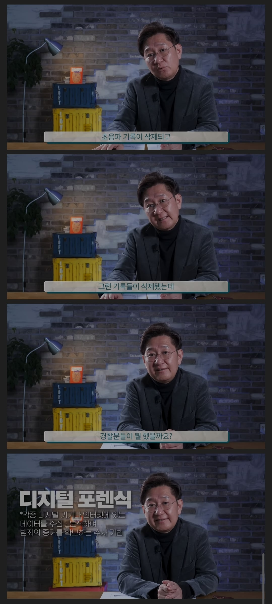

2016년 난임부부로 치료를 받던 부부가 어렵게 임신했지만 27주경 태반박리가일어나서 병원을 감
급하게 제왕절개로 아이를 꺼내고 호흡을 안정화 시켜야하는 상황 미숙아는 태반호흡이 아닌 폐호흡을 할준비가 뱃속에서 덜된상태에서 나오게됨
꺼내자마자 산부인과교수는 레지던트에게 전달 레지던트는 불과 3미터정도 떨어진곳 소아과의사가 기다리는 처치대에 아이를 올려놓으면 되는데
뛰다가 넘어져서 아이의 머리가 땅에 부딪힘 초음파 찍어보니 경막하출혈이 있음 결국 아이는 사망
아이부모에게 사고가 있었다는 사실을 숨김 초음파기록도 삭제함
사망진단서에 외인사로 적혀야 경찰이오고 부검을 하던말던 할텐데
병원에서 질병사라고 하니 아이는 병원쪽에서 화장까지 진행돼서 시신이라는 최고의 증거가 사라짐
하지만 2년반정도 거의 3년이 지난후 간호사들이 퇴사하면서 투서를 넣음
포렌식으로 기록을 살렸고 재판이 열림
병원측은 사고가 있었던건 사실이지만 직접적인 사망원인은 사고가아니라 미숙아여서 질병때문이라고 해명했지만
법의학자 유성호와 세브란스병원 신경외과교수의 증언으로 유죄판결
기록을 삭제하는등 범죄의 질이 좋지않아 의료사고 사건치고 이례적으로 법정구속까지함
결국 아이를 떨어트린 산부인과 레지던트는 금고1년 집행유예
산부인과 교수, 소아과 교수 징역2년 벌금300만원
부원장 징역2년(교수들이 부원장 라인이었는지 부원장에게 보고해서 각종 기록 삭제)
(이 은폐사건이 어처구니 없는게 어차피 애기죽은건 사고라서 집해유예로 끝날꺼고 돈을 물어내야하는건 병원이고 레지던트나 교수나 감봉이나 병원내 정치적인 입지가 불리해지는 정도로 소송당해서 폐가망신하는 개업의사가 아닌데도 이런 은폐를 한게 어처구니가 없음)
해당 사건의 경우는 다행히도 현장을 목격한 간호사들이 3년뒤 병원과 관계가 틀어졌는지 내부고발을 했고
장비교체가 되지 않아 포렌식이 가능했지만 병원이 마음먹고 다 교체하고 입맞췄다면? 압수수색 빨리 안하면 이런사건의 경우는 어떻게 수사해서 파헤쳐야됨?
3년동안 혹여나 본인들 잘못일까 상처받고 고통받은 부모들 어떻게 할꺼임 죽은 아기는 어떡할꺼임
병원 압수수색도 결국은 의사들 업보고 자업자득임 차병원이 어디 동네 병원도아니고 저정도 병원에서도 일어나는데 압수수색도 못하게하면 어떡하라는거임

몇몇 의룡인들도 문제가 있긴한데 이번에 압수수색으로 조져버린건 너무 간 것 같음 ㅋㅋㅋ